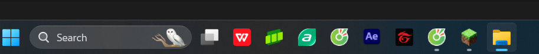
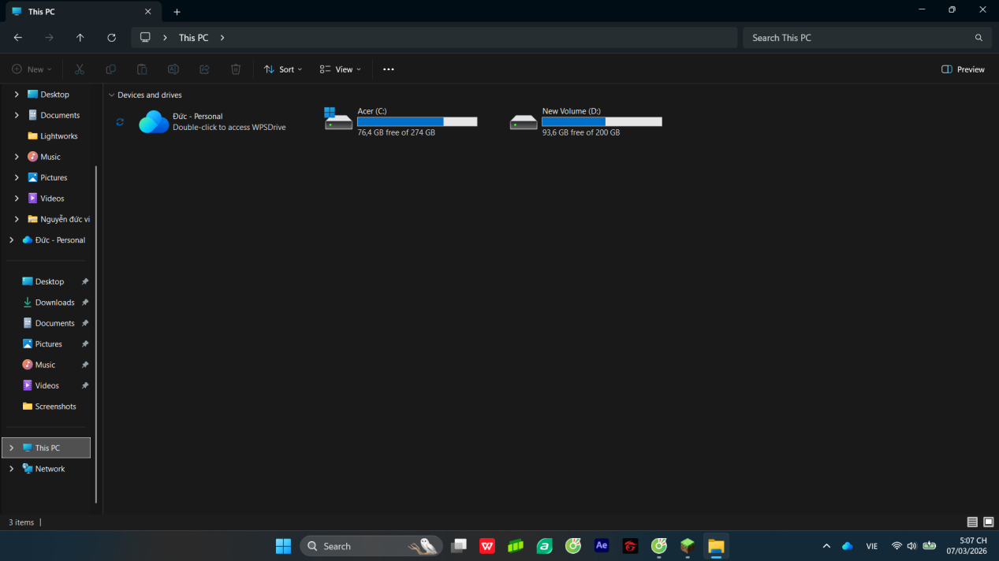
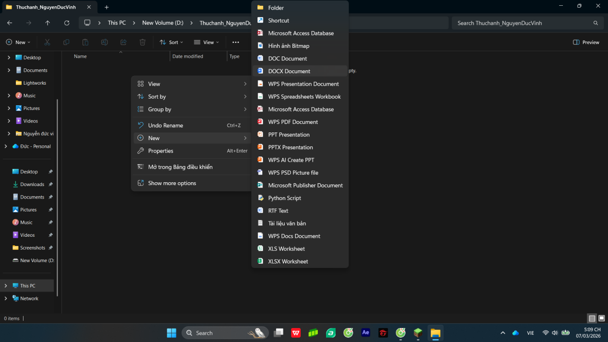
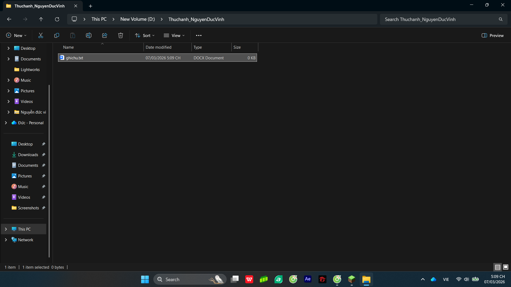
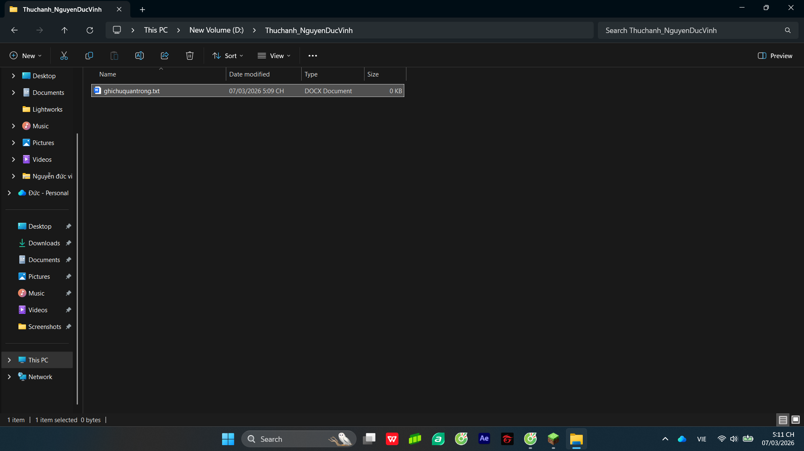
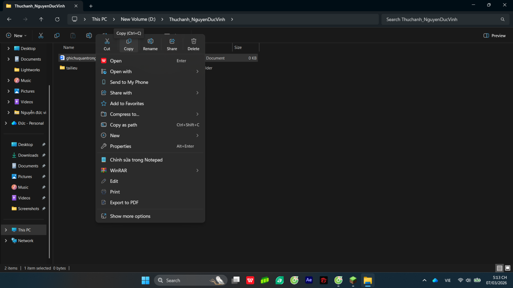
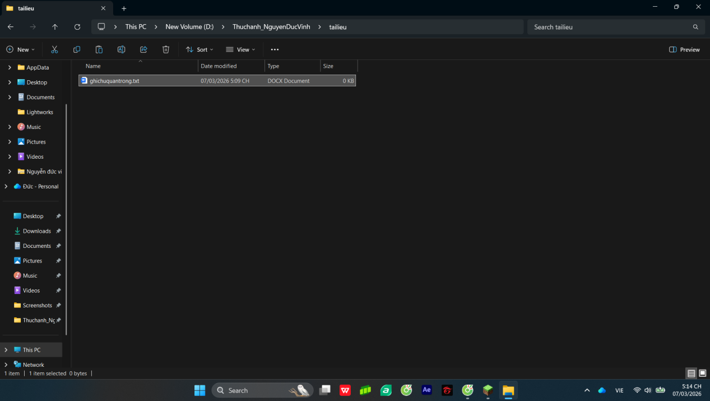
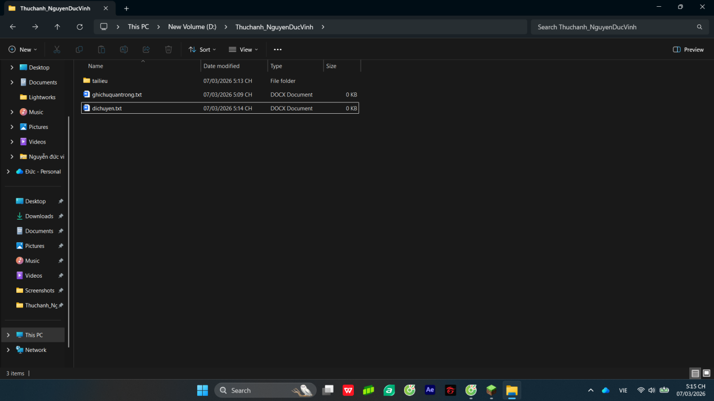
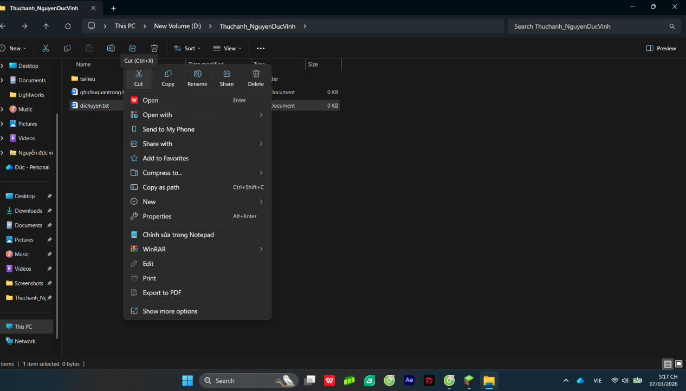

01. Thao tác cơ bản với tệp tin
×Quy trình thực hành
- Mở File Explorer: Nhấn tổ hợp phím Windows + E hoặc nhấp vào biểu tượng thư mục màu vàng trên thanh tác vụ.
- Truy cập ổ đĩa: Ở cột bên trái, nhấp vào This PC, sau đó nhấp đúp vào một ổ đĩa không phải ổ hệ thống (ví dụ: ổ D: hoặc E:).
- Tạo thư mục mới: Nhấp chuột phải vào một khoảng trống -> chọn New -> Folder. Đặt tên thư mục là
ThucHanh_NguyenDucVinh. Nhấn Enter. - Vào thư mục vừa tạo: Nhấp đúp vào thư mục ThucHanh_NguyenDucVinh.
- Tạo tệp tin văn bản: Nhấp chuột phải vào khoảng trống -> New -> Text Document. Đặt tên là
GhiChu.txt. Nhấn Enter. - Đổi tên tệp tin: Nhấp chuột phải vào tệp GhiChu.txt -> chọn Rename. Đổi tên thành
GhiChuQuanTrong.txt. Nhấn Enter. - Tạo thư mục con: Trong thư mục ThucHanh_NguyenDucVinh, nhấp chuột phải -> New -> Folder. Đặt tên là
TaiLieu. - Sao chép tệp tin (Copy & Paste): Nhấp chuột phải vào tệp GhiChuQuanTrong.txt -> chọn Copy. Nhấp đúp vào thư mục TaiLieu, nhấp chuột phải -> chọn Paste. Bạn đã tạo một bản sao.
- Di chuyển tệp tin (Cut & Paste):
- Quay lại thư mục gốc, tạo tệp mới tên là
DiChuyen.txt. - Nhấp chuột phải vào tệp DiChuyen.txt -> chọn Cut.
- Vào thư mục TaiLieu, nhấp chuột phải -> chọn Paste.
- Quay lại thư mục gốc, tạo tệp mới tên là
- Xóa tệp tin: Trong thư mục TaiLieu, nhấp chuột phải vào tệp GhiChuQuanTrong.txt -> chọn Delete (Tệp được chuyển vào Thùng rác).
- Xóa vĩnh viễn: Chọn tệp DiChuyen.txt, nhấn giữ Shift + Delete. Tệp sẽ bị xóa vĩnh viễn mà không qua Thùng rác.
- Khôi phục từ Thùng rác: Mở Recycle Bin trên màn hình nền. Tìm tệp GhiChuQuanTrong.txt, nhấp chuột phải chọn Restore. Tệp sẽ quay lại vị trí ban đầu.
Hình ảnh minh họa các bước thực hành:
1. Mở File Explorer & Truy cập ổ đĩa:


2. Tạo thư mục ThucHanh_NguyenDucVinh:

3. Tạo và đổi tên tệp tin GhiChuQuanTrong.txt:



4. Thao tác Copy, Cut & Paste:



